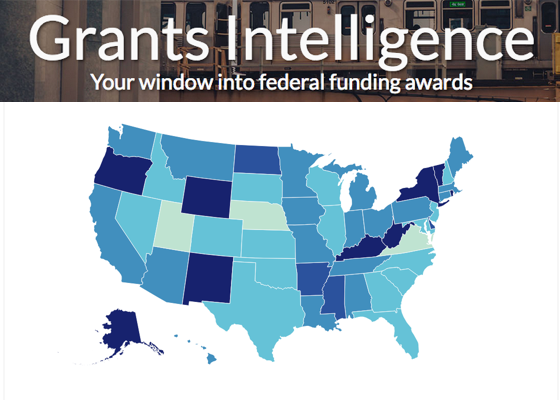

The Opportunity Project in Action
Since launching in 2016, The Opportunity Project has yielded dozens of new digital tools that help solve problems like connecting veterans and their families with jobs, connecting people experiencing homelessness with services and shelter, and rebuilding rural economies.
Cisco
Uses American Community Survey Data from the US Census Bureau to drive awareness of Census data for mobile millennials and application developers so they can solve social problems using open data available for their communities and cities.

My City Data Learning tool
Uses data sets from the DC Department of Human Services to help youth experiencing homelessness find and access services in the DC area.

Grants Intelligence
Uses CFDA, USA Spending, Single Audit, and Census data to help local, state, federal, and tribal governments navigate federal grants and maximize the ROI of federal grant dollars.
